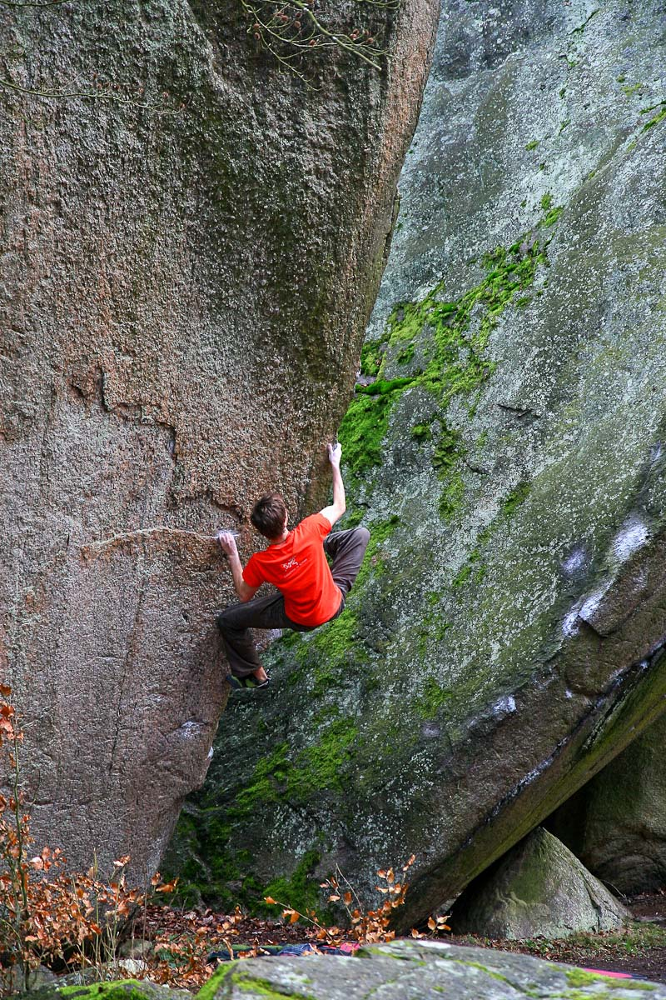
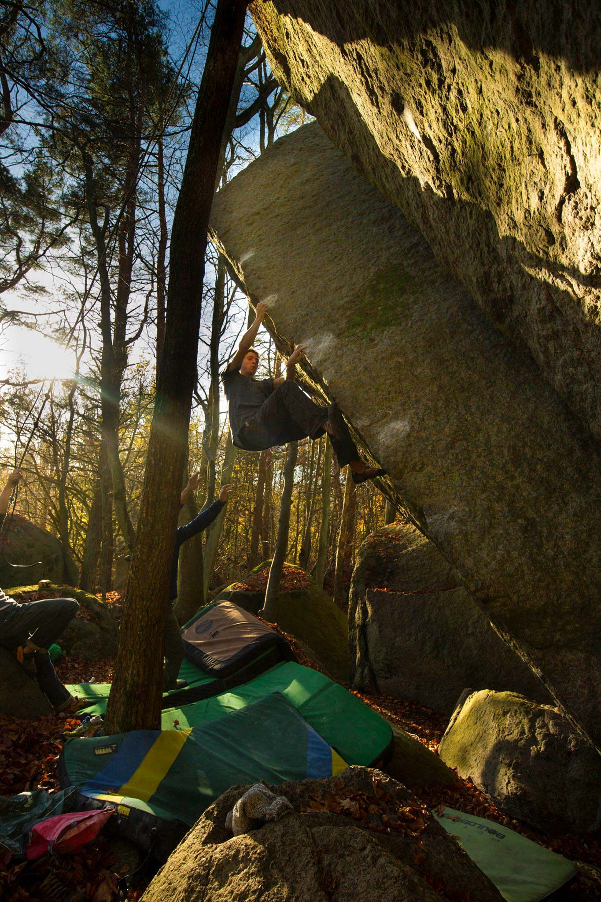

Respect the forest 🌲
Make sure to always follow these points when you're out climbing, so as to preserve nature and avoid disturbing other visitors in the forest. Ultimately it's about preventing climbing from being banned in the area – something which has happened to several nearby rope climbing crags.
- Keep a low profile – especially if you're visiting a smaller or sensitive area.
- Pick up your trash – and why not others' too? Keep nature clean and leave no traces!
- Avoid damaging the surrounding nature and try not to disturb the wildlife.
- Brush off tickmarks and excessive chalk when you leave.
- Walk a fair bit off-trail and dig a hole if you have to relieve yourself.

Nature-reserves 🍄
Some climbing spots are also nature-reserves or other types of protected areas. The following rules apply in these places:
- Do not damage trees, plants or the surrounding terrain.
- Keep brushing of moss to a minimum, especially on the most visible rocks (close to roads or houses).
- Do not make fires.
- No dogs allowed.
